Практика внедрения на примере интеграции в базу знаний
Разберемся, что такое векторный поиск
Поговорим о расширенных практиках
Почему мы говорим о RAG на конференции для ТехЛидов
RAG — это архитектурный паттерн
RAG будет внедряться в большое количество приложений и процессов в ближайшие годы
Лиды должны понимать, как это устроено и как встраивать этот паттерн в свои приложения и ландшафт
RAG: AI-инженеры vs программисты
У кого в команде есть AI-инженеры?
На мой взгляд, их будет становиться больше в 2026-м году, спрос будет расти
Сложные RAG-системы в сложных тематиках — скорее удел AI-инженеров
Простые RAG-системы чаще всего будут реализовывать обычные разработчики или аналитики в nocode-режиме
Пайплайны обработки данных также часто будут пилить обычные разработчики
Лиды должны этим процессом управлять
В чьих ПРОЕКТАХ уже внедряются LLM или планируются в обозримом будущем?
В чьих ПРОЦЕССАХ уже внедряются LLM или планируются в обозримом будущем?
Кто знает, как строятся RAG-системы?
Кто внедрял уже RAG в свои проекты?
Цели доклада
В докладе мы лишь мельком затрагиваем продвинутые техники
Заложить понимание архитектуры и основных вариантов решений
Структурировать знания о RAG
Дать понимание о точках роста и развитии RAG-систем
Зачем нужен RAG
Проблема нехватки контекста
LLM обучена на старых данных.
LLM не знает конкретно ваших данных (база знаний, информация о продуктах, о коде, о задачах, etc.).
Нехватка контекста ведет к повышенным галлюцинациям.
Дообучать модель сложно и дорого, к тому же данные могут быстро меняться.
Нужен контекст

Внешние сервисы как источник контекста

Типовые источники
SQL-/NoSQL базы данных
PostgreSQL, MySQL, MongoDB, DynamoDB.
Векторные базы
Qdrant, Weaviate, Milvus, Postgres + pgvector.
API корпоративных систем
CRM, ERP, Service Desk, TaskManager, etc.
Документы
Текстовые файлы, PDF, Word, Excel, Markdown.
Вики/Knowledge Base — Confluence, Notion, SharePoint
RAG: retriever + generator

Итого RAG
RAG = Retrieval-Augmented Generation.
Это подход/паттерн, при котором перед генерацией LLM достает нужные знания c помощью (Retriever), а потом использует их при ответе (Generator).
Кейсы RAG
Кодовые агенты и автоматический Code Review
RAG помогает LLM ориентироваться в больших кодовых базах и документации.
Примеры:
Sourcegraph Cody, Copilot X — ищут нужные фрагменты кода перед генерацией.
Code Review ассистенты — ищут похожие паттерны, стандарты и примеры в репозитории.
Ценность: релевантные подсказки, меньше ошибок, ускорение ревью и онбординга.
Быстрое извлечение знаний из корпоративных баз
Поиск информации в wiki, Confluence, Jira, Google Docs, email и др.
Пример: инженер спрашивает: «Как обновить staging?» — агент достаёт инструкцию из внутренней базы.
Ценность: мгновенный доступ к актуальным знаниям, сокращение времени поиска, снижение зависимости от «носителей знаний».
Интеллектуальный поиск
Улучшенный поиск по смыслу, а не по ключевым словам.
Пример: «Игровая видеокарта до 100 000 рублей» → агент ищет релевантные товары, даже если в описании нет слова «игровая», и дает продвинутые рекомендации на основе данных LLM.
Ценность: повышает конверсию, улучшает UX, снижает количество «нулевых» поисковых запросов.
HelpDesk и поддержка клиентов
Автоматизация ответов на основе внутренних документов, FAQ и тикетов.
Пример: пользователь пишет «не могу войти в систему» — агент ищет инструкции и предлагает решение.
Ценность: меньше обращений к операторам, стандартизированные ответы, круглосуточная поддержка.
Аналитика и суммаризация больших объемов информации
Автоматическое извлечение ключевых фактов из сотен документов, отчетов и публикаций.
Медицинские исследования: агрегация результатов из разных статей.
Юридическая аналитика: поиск и извлечение условий, сроков, рисков.
Научно-техническая аналитика: формирование обзора технологий и трендов.
Ценность: экономия часов экспертов, быстрые инсайты, поддержка решений.
Погружение на примере внедрения RAG в базу знаний
Вводные
ИТ компания - 150 человек
Есть корпоративная база знаний в outline (open source)
3000 документов (статей)
Хотим улучшить качество получения информации из базы знаний
Ответы корпоративного чат-бота на вопросы из БЗ
Поиск внутри БЗ должен поддерживать AI-агрегацию (как в гугле)
Ограничения
Должны учитываться права доступа к базе знаний
Предотвращение утечки чувствительных данных
Outline
35К звезд на гитхабе
«Аналог Notion в open source»
Backend: Nodejs
Frontend: React
DB: PostgreSQL
Markdown
OSS: механизм AI отсутствует
Примеры запросов:
Как повысить грейд
В какие числа выплачивается ЗП
Как зарелизить проект x
Проектируем Retriever
Проектируем Retriever
Выбираем способ выборки информации
Полнотекстовый поиск
Векторный поиск
Гибрид (вектор + полнотекстовый)
Через графовые БД *
Векторный поиск на пальцах
Векторный поиск на пальцах
Для трансформации text -> embedding нужно использовать Embedding Model
Вектор: набор чисел
Размерность векторов может быть разная: 384, 768, 1536, 3к+
Векторы, как правило, весят в несколько раз больше чем исходный текст
Нужен пайплайн для трансформации и поддержания актуальности относительно источника
Почему мы выбрали векторный поиск
Полнотекстовый поиск: были проблемы
Векторный поиск: было ожидание, что качество будет выше, чем допиленный полнотекстовый
Возможно, вернемся к гибриду в дальнейшем
Адаптируем схему под векторный поиск
Выбираем хранилище векторов (embedding)
Внешняя векторная База
Расширения postgres: pgvector pgvectorscale
Внешняя Векторная БД
Большой выбор open source решений с объемами векторов от 1M до 1B+.
Отличный обзор.
Доп расходы на инфраструктуру, более сложный пайплайн синхронизации
В большинстве случаев лучше скорость
Лучше когда несколько источников
PostgreSQL расширение (наш выбор)
Минусы: медленная индексация
Плюсы: нет доп. затрат на инфру, быстро начать
От 1-10M pgvector до 100M pgvectorscale
Индексы
HNSW
IVFFlat
Алгоритмы сравнения
Косинусное сходство (лучше для текстов)
L2/Евклидово расстояние (лучше для изображений, координат)
PostgreSQL расширение (наш выбор)
Выбираем Embedding model (encoder)
Факты про Embedding model:
Embedding model != LLM
Embedding model на основе весов LLM
Embedding model обычно выбирают меньшей по размерам, чем LLM
От модели может сильно зависеть качество
Выбираем Embedding model (encoder)
Базово выбираем по Massive Text Embedding Benchmark (MTEB) / ruMTEB
Проверяем на своем конкретном случае
Есть много моделей, которые могут запускать не в VRAM и потребляют достаточно немного
Специфика домена: для юридического, медицинского, многоязычного или кода — лучше использовать специализированные модели
Для стартапа и небольшого объема можно стартовать с облачными
Выбираем Embedding model (наш выбор)
OpenAI text-embedding-3-small 1536
Затраты не велики на наших объемах
Позже можно будет заморочиться и протестировать локальные
Недавно вышел неплохой обзор open source русскоязычных embedding-моделей (https://habr.com/ru/articles/961972/)
Выбираем Embedding модель (наш выбор)
Выбираем на чем писать пайплайн
LangChain/LangGraph — канон для большинства AI/Agentic/RAG приложений. Python + порт в TS.
+ LangFlow (визуализация и интеграция с библиотеками выше)
Нишевое решение: pgai — библиотека с воркерами и очередями в postgresql
Llamaindex — более узкое под RAG
Nocode: n8n, dify, etc
LangChain (наш выбор)
Чанкинг
Тексты нужно бить на чанки, иначе будет размываться смысл и падать качество
Есть куча алгоритмов-сплиттеров:
по размеру
по заголовкам Markdown: сначала сегментация по #, ##, ### с сохранением иерархического контекста, затем ограничение длины внутри секции
специальный сплиттеры для таблиц
семантическое разбиение с помощью LLM
двухпроходная обработка и объединение: после первичной нарезки выполняют пост‑обработку — merge слишком маленьких чанков, добавление перекрытий или контекстных префиксов
другие
Чем делать: современный и быстрый: chonkie (python) или использовать сценарии выбранной базовой библиотеки пайплайна
Осмысленный чанкинг
Бизнес анализ: понимания доменную область разбивать чанки на необходимые сущности.
Спрашиваем у LLM на какие основные вопросы отвечает этот текст. Бьем по границам вопросов.
Опционально: хранить в чанках только вопросы со ссылками на ответы.
Кейс: 80% на бизнес анализ и вычитку, переработку БЗ, 20% на разработку
Метаданные у чанков
Что можно хранить
ACL (для быстрой фильтрации по правам)
section_path/title (для подсветки в UX)
Для векторных БД: chunkId, documentId, model/model_version
LangChain + MarkDownSplitter
Фильтрация данных
В текстах могут быть данные, которые вы не хотите сливать во внешние сервисы или внешние LLM.
Microsoft Presidio (python) 6К ⭐
Обработка изменений
Чтобы не блокировать поток вынесли в отдельную таблицу-очередь
Разбиение на чанки
Векторизацию
Retriever
Поиск
Выбираем по 4–5 чанков по 500 токенов каждый, суммарно до ~1.5–2k токенов контекста
Длинные окна не панацея: рост контекста ухудшает извлечение релевантных фактов и скорость
Передаем в промпт Генератора
Generator
Generator
Температуру оставили низкой: 0.0-0.2
Явно говорим не переспрашивать, если не знаешь, и не фантазировать
Встраиваем источники со ссылками
Generator: пример промпта
СИСТЕМНОЕ ПРАВИЛО:
Ты — ассистент, отвечающий строго по предоставленным фрагментам компании.
Если информации недостаточно — скажи, чего не хватает, и предложи уточняющие вопросы.
Не фантазируй. Отвечай по-русски. В конце всегда приведи список источников с цитатами.
Generator: пример промпта
ШАБЛОН ВВОДА:
[Вопрос пользователя]
{question}
[Контекст — до {N} фрагментов, каждый с метаданными]
{context}
-- формат одного фрагмента:
ID: {doc_id} • Название: {title} • Раздел: {section_path} • Страница: {page}
Текст: """{snippet}"""
Generator: пример промпта
[Требования к ответу]
- Ответь кратко и по делу (3–6 предложений), затем при необходимости дай пошаговые инструкции или список.
- Если есть противоречия между фрагментами — укажи их и выбери наиболее актуальный по дате/версии.
- Используй точные формулировки из фрагментов, но перефразируй, избегая дословных цитат.
- Вставляй цитаты на источники в формате [ID:строка/страница] после соответствующих фактов.
Пропускаем через LLM, чтобы исправить коллизии или уточнить
Еще дальше: можно декомпозировать сложный запрос на подзапросы для многошагового поиска
HYDE — прием гипотетического ответа
С помощью LLM генерируем короткий ответ‑набросок на запрос
Именно его embedding используем для поиска ответа на вопрос
Снимает семантический разрыв «вопрос ↔ ответ»: большинство корпусов хранит ответы/факты, а не формулировки вопросов, поэтому embedding «гипотетического ответа» лучше совпадает с целевыми текстами с ответами
Reranking
Выбираем топ-N кандидатов через вектор
Пропускаем через LLM, чтобы выбрать лучшие варианты относительно запроса
Отправляем в финальный промпт топ-K документов
Context Window Enhancement
Выбираем соседние чанки из исходного документа для расширения контекста
Можно решать через overlap при формировании чанков
CAG - кешируем ответы
Формируем быстрый кеш из ответов
Создает нагрузку на объем контекста
RAG с памятью
Передаем в контекст не только текущий запрос пользователя, но и историю переписки
Историю можно суммаризировать, сокращая контекст
Self RAG
Система гибко реагирует на запросы пользователя
Реализуется модуль маршрутизатора который Алгоритмически позволяет
Переспросить
Переформулировать вопрос
Дернуть Retrieval
Ответить сразу если контекста хватает
etc
Agentic RAG
Даем Агенту тулы для поиска информации (API, вектор, БД, внешний поиск).
Агент самостоятельно решает, где и как искать информацию, формулирует и корректирует запросы
Может переформулировать запрос, изменить источник или остановиться, когда набрал достаточно контекста.
Графовые подходы: GraphRAG | Light RAG | etc
Представление индекса в виде графа знаний позволяет учитывать контекст и сложные связи между информацией, улучшая качество поиска и генерации.
Формирование графа автоматизированно, но требует ручной валидации, особенно в сложных областях
Сложнее и дороже во внедрении и обслуживании (на примере GraphRAG)
Активно развивается, и уже есть способы которые на объемах показывают кратное удешевление (Light RAG)
Про тестирование, эксперименты и метрики
Golden dataset
Составляем таблицу вопрос и ответ который мы ожидаем
Ответы должны быть точными и полными, основаны на ваших данных, содержать ключевые факты
Заполняем небольшой датасет вопросов и ответов (можно начать с 20-30 штук, оптимально >100)
Ручное тестирование: генератор
Что тестируем: Насколько сгенерированный ответ совпадает с ожидаемым
Заносим в таблицу полученные ответы и сравниваем с эталонными
Ручное тестирование: ретривер
Что тестируем:
Нашел ли ретривер все документы из базы?
Можем дополнить golden dataset ссылками.
Сколько нашел лишних?
Что делаем:
Пишем через AIшку небольшой скрипт который будет показывать:
Найденные чанки на запрос
% совпадения косинусного сходства
Исследуем на % совпадения и корректность выдаваемых чанков во время поиска при экспериментах
Наши эксперименты
На младшей модели OpenAI у нас большинство наших запросов было < 0.5 по совпадению с целевыми статьями. Повышение со small до large модели резко повысило качество.
Уперлись в лимит по PostgreSQL, он не позволяет хранить векторы 2000. Сделали 2000, старшая модель позволяет понижать размерность вектора
Экспериментировали с размером чанка, сделали его больше (500-1000)
Ведем табличку для метрик при разных экспериментах.
Что можно мерить в production
Latency (время ответа)
Cost per query
Количество случаев, когда не смогли ответить
Выводы
Наши выводы и планы
Корпоративный бот по базе знаний выдает неплохой результат практически без улучшений.
Думаем законтрибьютить наши доработки в форк для outline
(есть ощущения что в основную ветку отклонят)
План расширить корпоративный RAG на TaskTracker, улучшать и расширять базу и поэксперементировать с RAG + mattermost.
Внедряем двум нашим клиентам более продвинутые версии
Выводы
RAG — базовый паттерн в современном поиске и AI-приложениях
Он не дает 100% точности, но имеет большой спектр практик для повышения качества
Простой RAG может сварить любой инженер на коленках, для сложных решений чаще понадобится опытный AI-инженер
Нужны эксперименты: с моделями, размерами и алгоритмами чанков, нет гарантий, что точно все качественно сработает именно на ваших данных, в вашей доменной зоне
Возможно, именно в вашем случае гибрид или старый добрый полнотекстовый поиск bm25 будет работать лучше. Или вам нужно переходить на более сложный графовый подход.